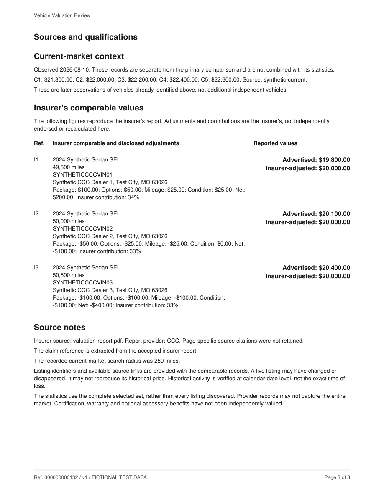
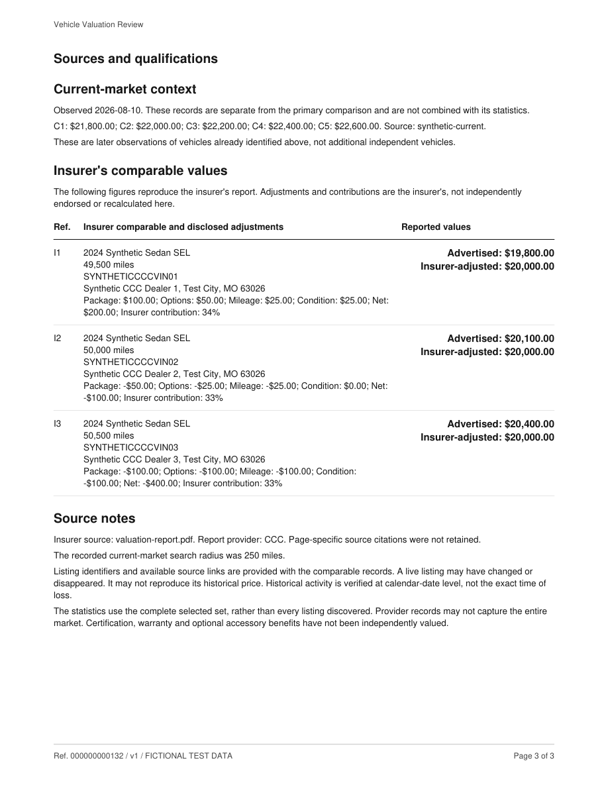
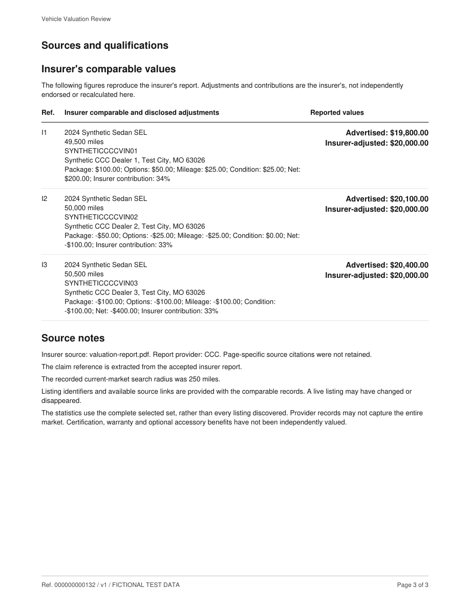

Vehicle Valuation Review
Fictional local samples. Click any title to open its PDF, or a page to inspect the full-resolution image. These previews do not establish production release qualification.
Same frozen source and assessment as the original ten-page report; nine primary vehicles and two later observations.
 Page 1 of 3
Page 1 of 3 Page 2 of 3Page 3 of 3
Page 2 of 3Page 3 of 3Offline fixture analysis with five primary vehicles and three insurer comparables.
 Page 1 of 3
Page 1 of 3 Page 2 of 3
Page 2 of 3
Page 3 of 3Presentation stress fixture; VIN, insurer and claim omitted, unverified trim disclosed.
 Page 1 of 3
Page 1 of 3 Page 2 of 3
Page 2 of 3
Page 3 of 3Presentation stress fixture without eligible market or insurer comparable rows; no forced reconsideration request.
 Page 1 of 1
Page 1 of 1Presentation stress fixture with 18 long comparable rows and long source URLs. Headline statistics are retained from the base fixture solely for layout testing.
Offline fixture analysis with no material discrepancy; no increase requested.
 Page 1 of 3
Page 1 of 3 Page 2 of 3Page 3 of 3
Page 2 of 3Page 3 of 3Offline fixture analysis with only two primary vehicles; the limitation is stated prominently.
 Page 1 of 3
Page 1 of 3 Page 2 of 3Page 3 of 3
Page 2 of 3Page 3 of 3Offline fixture analysis using current observations without verified loss-date evidence.
 Page 1 of 3
Page 1 of 3 Page 2 of 3
Page 2 of 3
Page 3 of 3